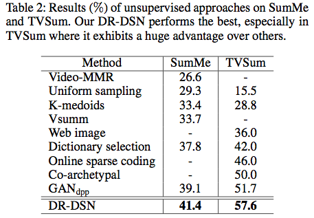
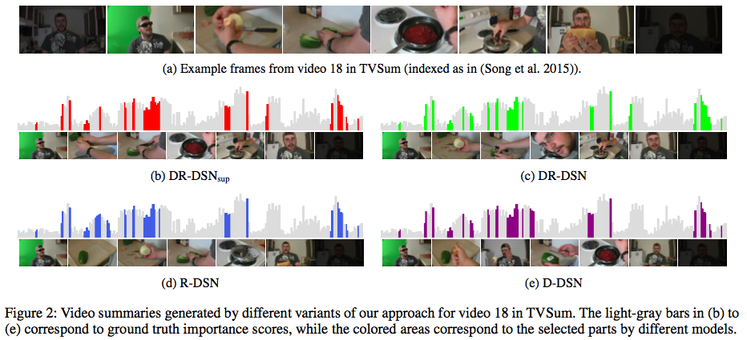
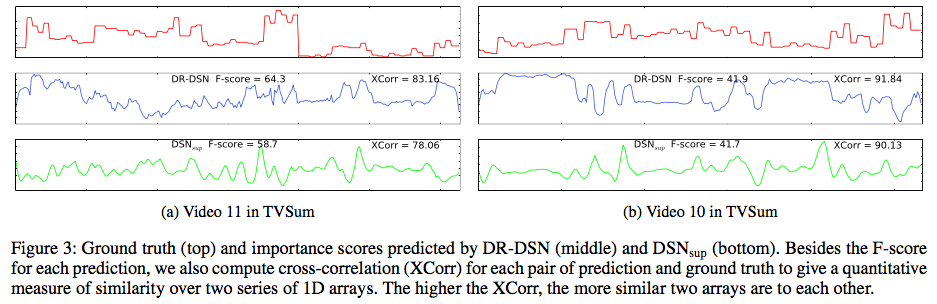

Deep Reinforcement Learning for Unsupervised Video Summarization
with Diversity-Representativeness Reward
Kaiyang Zhou,
Yu Qiao
Background on video summarization
Video summarization aims to automatically summarize videos into short keyframes or keyshots (clips), which are required to be informative of original videos such that users can quickly grasp key ideas conveyed by them. Video summarizaiton can not only facilitate large-scale video browsing, but also make video retrieval more efficient.
Recurrent Neural Network (RNN), known as being good at modelling sequential patterns, has been exploited to summarize videos. Typically, RNN was trained to regress importance scores where the supervision signal at each timestep is a labelled importance score. At test time, RNN predicts an importance score for each frame or video segment depending on what kind of supervision information was given during training. A number of frames or segments with the highest scores are selected to form the final video summary. When performing frame or segment selection, a length constraint is applied to limit the length of video summary, which is usually set to 15% of video length.
Motivation of our work
Training RNN with human labels for video summarization has achieved state-of-the-art performances in several benchmark datasets. However, there are two disadvantages for such methods. (1) Collecting human labels for video summarization are expensive in both time and cost, which hinders the use of RNN for large-scale summarization applications. (2) Since humans have subjective opinions on video summaries, a single ground truth summary for a video does not exist. This significantly differs from other tasks such as object recognition where the ground truth is well defined, i.e. object class.
To overcome the biases in labelled video summaries, we propose a novel label-free reward function to train RNN with reinforcement learning. Our reward function combines a diversity reward and a representativeness reward, which are closely concerned with how humans summarize videos. Our training strategy does not require labels or human interactions at all, so our method can be fully unsupervised. To the best of our knowledge, our work is the first to apply reinforcement learning to unsupervised video summarization.
Methodology

The overall pipeline of our learning algorithm is depicted in Figure 1 above. We formulate video summarization as a sequential decision-making process and develop a Deep Summarization Network (DSN) to summarize videos. DSN is composed of a Convolutional Neural Network (CNN) that performs feature extraction on video frames and a Bidirectional RNN (BiRNN) that predicts for each frame a probability indicating how likely a frame is selected. Based on the predicted probability distributions, actions are taken to select frames to form video summaries.
Our reward function judges how diverse and representative the produced summaries are, while DSN strives for earning higher rewards by producing more diverse and more representative summaries. Specifically, the diversity reward measures how dissimilar the selected frames are to each other and the representativeness reward computes the mean of squared errors between frames and their nearest selections, which is analogous to the k-medoids formulation. Therefore, the higher the dissimilarity between selected frames, the higher the diversity reward. Likewise, the smaller the mean distance between frames and their nearest selections, the higher the representativeness reward. The REINFORCE algorithm is employed to directly optimize the policy network i.e. DSN.
At test time, we regard the predicted probabilities as importance scores and compute segment-level scores by averaging scores within the same segment. We formulate summarization generation as the 0/1 Knapsack problem, i.e. maximizing total scores of selected segments while ensuring the summary length does not exceed a threshold. For technical details, please refer to our paper.
The rationale for using reinforcement learning (RL) to traing DSN is two-fold. Firstly, we use RNN as part of our model and focus on the unsupervised setting. RNN needs to receive supervision signals at each temporal step but our rewards are computed over the whole video sequence, i.e., they can only be obtained after a sequence finishes. To provide supervision from a reward that is only available in the end of sequence, RL becomes a natural choice. Secondly, we conjecture that DSN can benefit more from RL because RL essentially aims to optimize the action (frame-selection) mechanism of an agent by iteratively enforcing the agent to take better and better actions. However, optimizing action mechanism is not particularly highlighted in a normal supervised/unsupervised setting.
Experimental results
We briefly discuss some experimental results here. The evaluation metric is the F-score that measures the similarity between automatic summaries and human-annotated summaries. Table 2 shows the comparison between our unsupervised method (DR-DSN) and other state-of-the-art unsupervised methods. From the table, we see that our method clearly outperforms the alternatives, especially on the TVSum dataset where our method beats others by large margins. We also extend our unsupervised method to the supervised version to leverage human labels. We experimentally show that the supervised version of our method outperforms other supervised approaches. More surprisingly, our unsupervised approach is comparable to or even superior than most supervised approaches, which verifies the effectiveness of our learning algorithm.

Figure 2 visualizes the video summaries obtained by our method and its variants in an example video, which talks about a man making a spicy sausage sandwich. DR-DSNsup corresponds to the supervised extention of DR-DSN. R-DSN and D-DSN represent DSNs trained with the representativeness reward along and the diversity reward along, respectively.

Figure 3 shows the raw predictions by DR-DSN and DSNsup (DSN trained with a pure supervision loss function). By comparing the predictions with ground truth, we can better understand in more depth how well DSN has learned. It is worth highlighting that the curves of importance scores predicted by the unsupervised model resemble those predicted by the supervised model in several parts. More importantly, these parts coincide with the ones also considered as important by humans. This strongly demonstrates that reinforcement learning with our diversity-representativeness reward function can well imitate the human-learning process and effectively teach DSN to recognize important frames.

Citation
@inproceedings{zhou2018reinforcevsumm,
title = {Deep Reinforcement Learning for Unsupervised Video Summarization
with Diversity-Representativeness Reward},
author = {Zhou, Kaiyang and Qiao, Yu},
booktitle = {AAAI Conference on Artificial Intelligence (AAAI)},
year = {2018},
}